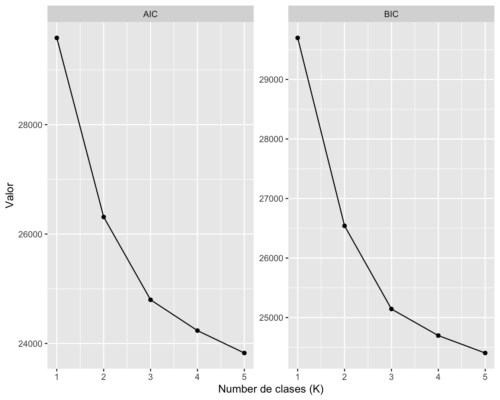
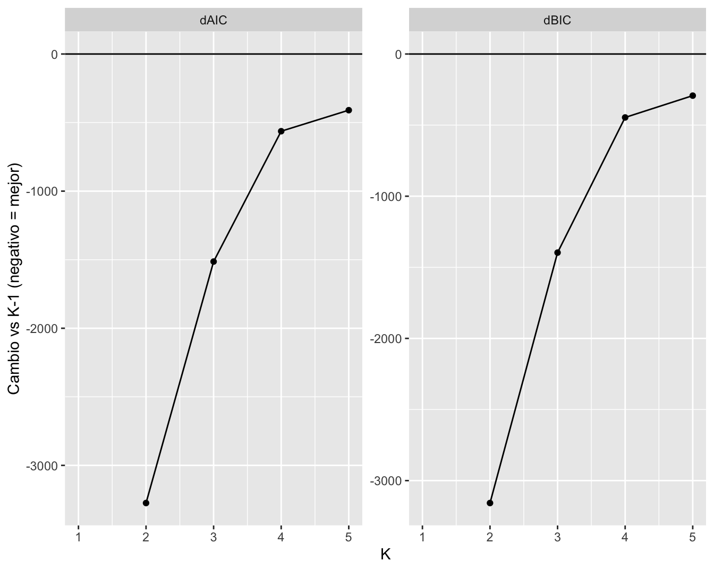
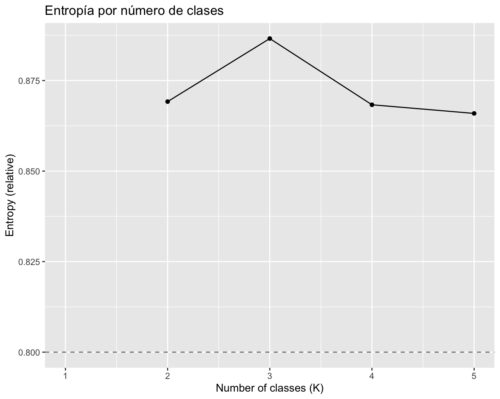
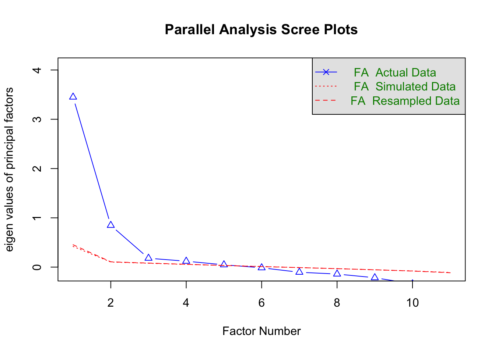

En este documento se desarrolla un análisis de clases latentes (LCA) a un conjunto de ítems que miden actitudes hacia la intervención del Estado y el mercado en el bienestar (Serie Clima Social 2026, Ola 1), con el fin de identificar perfiles latentes distintivos de cómo las personas combinan la aceptación de trade-offs de mercado con preferencias institucionales sobre la provisión pública, privada o mixta de servicios.
En lugar de centrarse en validar un modelo de medición preestablecido, el análisis busca develar patrones de configuración de respuestas a través de los ítems, identificando así tipologías empíricamente fundamentadas de orientaciones Estado-mercado.
El dataset utilizado es UDP Junio 2026 - Datos.sav.
2 Datos
Encuesta: Serie Clima Social 2026 — Ola 1 (“Garantías sociales en tiempos de incertidumbre”)
Modo: Encuesta online (CAWI), panel Ipsos
Población: Adultos en Chile (cobertura nacional)
Trabajo de campo: 2–8 de junio de 2026
Muestreo: panel online, con control de cuotas ex ante por macro zona, sexo, edad, nivel educacional y GSE, y calibración ex post (DEFF ≈ 2,35; N efectivo ≈ 639)
Tamaño muestral: N = 1.500 casos efectivos
Muestra analítica (LCA): N = 1.500 (sin pérdida de casos por valores perdidos en los ítems utilizados)
3 Medidas
El análisis utiliza nueve ítems agrupados en dos bloques temáticos, seleccionados mediante un proceso de screening previo (análisis de distribuciones, matriz de correlaciones policóricas, y análisis factorial exploratorio):
Trade-offs de mercado (3 ítems, escala de acuerdo de 4 puntos): aceptación de sacrificios concretos —en desigualdad, protección ambiental y derechos laborales— a cambio de crecimiento económico o generación de empleo.
Preferencia institucional por dominio (6 ítems, escala de 3 categorías: Estado / Mixto / Privado): preferencia de modelo de provisión en pensiones, salud, educación escolar, educación universitaria, cuidado infantil y cuidado de personas mayores.
Dos ítems adicionales (intervención general del Estado en la economía, y un ítem sobre tamaño/costo del Estado) fueron evaluados en el screening inicial pero excluidos del modelo final por baja carga factorial y débil poder discriminante.
4 Método
4.1 Análisis de clases latentes
El análisis de clases latentes (LCA) es un método estadístico que modela las asociaciones entre variables observadas asumiendo que una variable latente categórica no observada explica su estructura subyacente. Esta variable latente representa subgrupos discretos dentro de la población, donde los individuos de una misma clase comparten patrones de respuesta similares.
El LCA es especialmente apropiado para indicadores categóricos y ordinales, como ítems de escala Likert.
4.1.1 Propósito analítico
El LCA puede tener propósitos tanto exploratorios como confirmatorios.
Como técnica exploratoria, identifica tipologías latentes de configuraciones actitudinales.
Como técnica confirmatoria, permite poner a prueba hipótesis sobre heterogeneidad en la población.
Sustantivamente, el LCA permite derivar tipos ideales empíricamente fundamentados de orientaciones Estado-mercado.
4.1.2 Supuestos clave
Cada individuo pertenece a una clase latente.
Los individuos dentro de una misma clase comparten probabilidades de respuesta similares.
Los indicadores observados son condicionalmente independientes una vez controlada la pertenencia de clase (independencia local).
4.1.3 Parámetros del modelo
El modelo estima dos conjuntos principales de parámetros:
Probabilidades de clase
Indican la probabilidad de pertenecer a cada clase latente y reflejan el tamaño relativo de cada grupo en la población.
Probabilidades de respuesta condicional
Indican la probabilidad de elegir una categoría de respuesta particular, dado la pertenencia a una clase latente. Estos parámetros se usan para interpretar y etiquetar las clases.
4.2 Interpretación
Las clases latentes se definen por perfiles de respuesta distintivos a través de los ítems. Estos perfiles capturan distintas combinaciones de:
aceptación de trade-offs de mercado
preferencias normativas sobre provisión pública, privada o mixta
Esto permite identificar sistemas de creencias complejos en los que las personas pueden, por ejemplo, aceptar ciertos trade-offs de mercado mientras simultáneamente prefieren modelos de provisión mixtos o estatales en dominios concretos de servicios — o viceversa.
4.3 Estimación y ajuste del modelo
Los modelos se estiman de forma iterativa, incrementando el número de clases.
La selección del modelo se basa principalmente en criterios de ajuste estándar, especialmente:
Criterio de Información Bayesiano (BIC)
Criterio de Información de Akaike (AIC)
Valores más bajos indican mejor ajuste, equilibrando a la vez complejidad y parsimonia del modelo.
4.4 Contribución
Esta estrategia desplaza el análisis desde un enfoque centrado en variables hacia uno centrado en personas. Al hacerlo, permite:
capturar heterogeneidad en los sistemas de creencias sobre Estado y mercado
identificar subgrupos significativos de encuestados
examinar cómo coexisten en los individuos la aceptación de trade-offs de mercado y las preferencias institucionales de provisión
Existen distintas opiniones sobre cuánto debería intervenir el Estado en la sociedad. En su opinión, ¿cuánto debería intervenir el Estado en la economía y en el bienestar de los chilenos?
1. [1] Nada: el mercado debe
2. [2] Poco
3. [3] Algo
4. [4] Bastante
5. [5] Mucho: el Estado debe
28
(
1.9%
)
71
(
4.7%
)
340
(
22.7%
)
734
(
48.9%
)
327
(
21.8%
)
1500 (100.0%)
0 (0.0%)
Vale la pena tener un Estado más grande y costoso si eso garantiza mejores servicios para todos
1. [1] Muy en desacuerdo
2. [2] En desacuerdo
3. [3] Ni de acuerdo ni en d
4. [4] De acuerdo
5. [5] Muy de acuerdo
175
(
11.7%
)
239
(
15.9%
)
464
(
30.9%
)
442
(
29.5%
)
180
(
12.0%
)
1500 (100.0%)
0 (0.0%)
Es preferible una economía que crece rápido aunque aumente la desigualdad entre ricos y pobres
1. [1] Muy en desacuerdo
2. [2] En desacuerdo
3. [3] Ni de acuerdo ni en d
4. [4] De acuerdo
5. [5] Muy de acuerdo
395
(
26.3%
)
497
(
33.1%
)
386
(
25.7%
)
171
(
11.4%
)
51
(
3.4%
)
1500 (100.0%)
0 (0.0%)
Vale la pena sacrificar la protección ambiental si eso genera más empleos
1. [1] Muy en desacuerdo
2. [2] En desacuerdo
3. [3] Ni de acuerdo ni en d
4. [4] De acuerdo
5. [5] Muy de acuerdo
465
(
31.0%
)
410
(
27.3%
)
337
(
22.5%
)
221
(
14.7%
)
67
(
4.5%
)
1500 (100.0%)
0 (0.0%)
Vale la pena reducir algunos derechos laborales si eso permite que las empresas contraten más trabajadores
1. [1] Muy en desacuerdo
2. [2] En desacuerdo
3. [3] Ni de acuerdo ni en d
4. [4] De acuerdo
5. [5] Muy de acuerdo
525
(
35.0%
)
409
(
27.3%
)
310
(
20.7%
)
193
(
12.9%
)
63
(
4.2%
)
1500 (100.0%)
0 (0.0%)
Pensiones de vejez
1. [1] El Estado, asegurando
2. [2] Cada persona o famili
3. [3] Servicios privados pa
791
(
52.7%
)
179
(
11.9%
)
530
(
35.3%
)
1500 (100.0%)
0 (0.0%)
Atención de salud
1. [1] El Estado, asegurando
2. [2] Cada persona o famili
3. [3] Servicios privados pa
787
(
52.5%
)
150
(
10.0%
)
563
(
37.5%
)
1500 (100.0%)
0 (0.0%)
Educación escolar (básica y media)
1. [1] El Estado, asegurando
2. [2] Cada persona o famili
3. [3] Servicios privados pa
808
(
53.9%
)
155
(
10.3%
)
537
(
35.8%
)
1500 (100.0%)
0 (0.0%)
Educación universitaria
1. [1] El Estado, asegurando
2. [2] Cada persona o famili
3. [3] Servicios privados pa
637
(
42.5%
)
218
(
14.5%
)
645
(
43.0%
)
1500 (100.0%)
0 (0.0%)
Servicios de cuidado y educación para niños y niñas (sala cuna y jardín infantil)
1. [1] El Estado, asegurando
2. [2] Cada persona o famili
3. [3] Servicios privados pa
783
(
52.2%
)
187
(
12.5%
)
530
(
35.3%
)
1500 (100.0%)
0 (0.0%)
Servicios de cuidado para personas mayores dependientes
1. [1] El Estado, asegurando
2. [2] Cada persona o famili
3. [3] Servicios privados pa
743
(
49.5%
)
187
(
12.5%
)
570
(
38.0%
)
1500 (100.0%)
0 (0.0%)
Generated by summarytools 1.1.5 (R version 4.5.2) 2026-07-03
Estimamos modelos de clases latentes con entre una y cinco clases. El ajuste del modelo mejoró de manera monotónica a medida que aumentó el número de clases, como lo indican la disminución de los valores de AIC y BIC, y las pruebas de razón de verosimilitud estadísticamente significativas en cada paso (Tabla 2).
# Visual: AIC/BIC by K (lower is better)ggplot(fit_long, aes(x = K, y = value, group = criterion)) +geom_line() +geom_point() +facet_wrap(~criterion, scales ="free_y") +labs(x ="Number de clases (K)", y ="Valor")
Figura 2: Visual: AIC/BIC por K (menor es mejor)

Show the code
# Visual: ΔAIC and ΔBIC (negative = improvement over K-1)ggplot(delta_long, aes(x = K, y = value, group = delta)) +geom_hline(yintercept =0) +geom_line() +geom_point() +facet_wrap(~delta, scales ="free_y") +labs(x ="K", y ="Cambio vs K-1 (negativo = mejor)")
Figura 3: ΔAIC y ΔBIC (negativo = mejora respecto a K-1)

Sin embargo, la mejora incremental en el ajuste del modelo disminuyó sustancialmente más allá de la solución de tres clases. Mientras que el paso de una a tres clases produjo reducciones importantes tanto en el AIC como en el BIC, las soluciones de cuatro (AIC = 24235.2; BIC = 24697.5) y cinco clases (AIC = 23825.6; BIC = 24404.7) aportaron solo mejoras modestas adicionales en comparación con la solución de tres clases. Por lo tanto, aunque el modelo de cinco clases presentó un ajuste estadísticamente superior, la magnitud de esta mejora fue relativamente limitada (véanse Figura 2 y Figura 3).
Esta conclusión se ve reforzada por los valores de entropía presentados en Figura 4. La entropía aumentó sustancialmente al pasar de una a tres clases, lo que indica una mejora significativa en la calidad de la clasificación de los individuos. Sin embargo, este indicador disminuyó en las soluciones de cuatro y cinco clases, lo que sugiere que la incorporación de clases adicionales no contribuyó a una mejor diferenciación entre los grupos latentes.
Show the code
ggplot(fit_tbl, aes(x = K, y = entropy)) +geom_hline(yintercept =0.80, linetype ="dashed", color ="grey50") +geom_line() +geom_point() +labs(x ="Number of classes (K)", y ="Entropy (relative)",title ="Entropía por número de clases")
Figura 4: Entropía por número de clases

En consecuencia, se seleccionó la solución de tres clases como modelo final. Esta decisión se fundamentó tanto en criterios estadísticos como en criterios sustantivos. Por una parte, el modelo de tres clases mostró un ajuste adecuado a los datos, manteniendo un nivel razonable de parsimonia y una clara interpretabilidad de las clases identificadas. Por otra parte, las soluciones con un mayor número de clases aportaron una diferenciación adicional limitada, insuficiente para justificar el aumento de la complejidad del modelo. En este sentido, la solución de tres clases representa la caracterización más robusta y conceptualmente coherente de la estructura latente observada en los datos.
5.3 Modelo de tres clases latentes
La Tabla 3 muestra las probabilidades condicionales de respuesta asociadas a cada clase latente y sus tamaños respectivos. La solución de tres clases sugiere que los respondentes no se diferencian principalmente a lo largo de un continuo simple de “más estatista” a “más promercado”. En cambio, las clases latentes se organizan por combinaciones distintivas de: (1) aceptación de trade-offs de mercado en dominios concretos (crecimiento vs. desigualdad, empleo vs. medioambiente, empleo vs. derechos laborales), y (2) preferencias normativas sobre quién debería proveer los servicios de bienestar (Estado, privados o un modelo mixto). Como tal, los resultados revelan heterogeneidad no solo en las posiciones generales sobre el rol del Estado, sino también en la disposición a aceptar costos redistributivos y en las preferencias institucionales por dominio de política. Esta interpretación es consistente con los perfiles de respuesta por ítem a través de las clases.
Dos patrones más amplios estructuran la solución de clases. Primero, las preferencias por provisión estatal son altas en la mayoría de las clases y en la mayoría de los dominios, especialmente en salud y educación escolar, lo que sugiere que el apoyo a algún grado de intervención estatal es mayoritario en la población. Segundo, la principal línea de diferenciación no radica en si se prefiere o no al Estado como proveedor, sino en la disposición a aceptar que el mercado opere junto al Estado —ya sea en forma de trade-offs o de provisión privada para quienes pueden pagarla. En otras palabras, las clases se diferencian menos en su rechazo al Estado y más en cuánto espacio normativo le conceden al mercado.
Puntaje esperado normalizado por ítem y clase (K=3)
variable
Class_1 (46.3%)
Class_2 (18.3%)
Class_3 (35.4%)
idp40l367 (crecimiento vs desigualdad)
0.319
0.694
0.439
idp40l368 (empleo vs ambiente)
0.306
0.734
0.443
idp40l369 (empleo vs derechos laborales)
0.272
0.704
0.409
idp42l375 (pensiones)
0.096
0.618
0.392
idp42l376 (salud)
0.069
0.607
0.409
idp42l377 (educación escolar)
0.044
0.635
0.412
idp42l378 (educación universitaria)
0.145
0.704
0.465
idp42l379 (cuidado infantil)
0.088
0.651
0.401
idp42l380 (cuidado personas mayores)
0.119
0.614
0.417
Clase 1: Estatista consistente (46.3%)
La primera clase es la más numerosa y se caracteriza por un rechazo generalizado a los trade-offs de mercado y una preferencia marcada por la provisión estatal en todos los dominios de bienestar. Los puntajes esperados en los ítems de trade-off son bajos (0.27–0.32), indicando desacuerdo con sacrificar derechos laborales, protección ambiental o igualdad distributiva en favor del crecimiento económico o el empleo. La preferencia por provisión estatal es aún más pronunciada en los ítems institucionales, con puntajes cercanos a cero en salud (0.07) y educación escolar (0.04), lo que refleja una inclinación casi exclusiva hacia el Estado como proveedor gratuito e igualitario.
Sustantivamente, esta clase combina un rechazo normativo a los costos redistributivos del mercado con una preferencia firme por la universalidad de los servicios públicos. No se trata de una posición que simplemente prefiera al Estado “por defecto”, sino de una orientación coherente en la que tanto los trade-offs como la provisión privada son percibidos como inaceptables. Es la clase que más consistentemente expresa una visión de la protección social como derecho garantizado por el Estado, independientemente del dominio de política.
Clase 2: Promercado consistente (18.3%)
La segunda clase, aunque minoritaria, presenta el perfil más diferenciado del conjunto. Sus puntajes son sistemáticamente altos tanto en los ítems de trade-off (0.69–0.73) como en los institucionales (0.61–0.70), indicando acuerdo con sacrificar bienes colectivos a cambio de eficiencia económica y preferencia por la provisión privada o mixta en todos los dominios de bienestar.
Sustantivamente, esta clase expresa una orientación promercado coherente que no se limita a un dominio específico ni a un tipo de trade-off particular. Sus miembros no solo aceptan los costos distributivos del crecimiento, sino que además prefieren que sean los privados —o un esquema de cobertura diferenciada— quienes provean los servicios de bienestar. A diferencia de lo que podría esperarse, esta no es la clase de mayor capital socioeconómico: su perfil demográfico se caracteriza por educación e ingresos medios-bajos, identificación ideológica de derecha marcada, y predominio masculino. Esto sugiere que su orientación promercado está más anclada en identificación política que en posición de clase objetiva.
Clase 3: Mixto (35.4%)
La tercera clase ocupa una posición intermedia pero con una lógica propia que va más allá de la mera ambigüedad. En los ítems de trade-off sus puntajes son moderados (0.41–0.44), indicando una posición cautelosa pero no de rechazo categórico. En los ítems institucionales, en cambio, la señal es mucho más nítida: los puntajes se concentran alrededor de 0.40–0.47, lo que —revisando las probabilidades condicionales directamente— refleja una preferencia robusta y consistente por la opción mixta (Estado para quienes no pueden pagar, privados para quienes sí pueden), no una división interna entre los extremos.
Sustantivamente, esta clase no representa indiferencia ni falta de posición. Sus miembros expresan una preferencia genuina por modelos de provisión compartida entre Estado y mercado, lo que constituye una posición normativa propia y distinta tanto del estatismo de la Clase 1 como del promercado de la Clase 2. Es además la clase con mayor capital socioeconómico (mayor ingreso y escolaridad) y con mayor proporción de mujeres, lo que sugiere que la posición “mixta” no es una posición residual, sino un perfil actitudinal con base social específica.
Interpretación general
En conjunto, la solución de tres clases sugiere que las actitudes hacia el Estado y el mercado en bienestar son mejor comprendidas como multidimensionales e internamente heterogéneas. El contraste principal no es entre quienes apoyan al Estado y quienes no lo hacen, sino entre distintas formas de combinar la disposición a aceptar trade-offs de mercado con preferencias sobre modelos institucionales de provisión. Dicho de otro modo, las clases varían en dos ejes centrales: primero, cuánto espacio normativo le conceden al mercado como mecanismo de asignación; y segundo, si ese espacio aplica de forma homogénea a todos los dominios de política o se concentra en algunos.
Este marco permite clarificar la estructura más amplia de los resultados. La Clase 1 rechaza el mercado tanto en los trade-offs como en la provisión, expresando una visión universalista y estatista de la protección social. La Clase 2 acepta el mercado en ambas dimensiones, combinando tolerancia a los costos distributivos con preferencia por la provisión diferenciada según capacidad de pago. La Clase 3 se distingue de ambas por su preferencia por modelos mixtos en la provisión institucional, acompañada de una posición cautelosa —pero no de rechazo— frente a los trade-offs. En conjunto, los resultados muestran que el apoyo al Estado no implica necesariamente el rechazo al mercado en todos los dominios, y que la preferencia por modelos mixtos constituye una posición actitudinal sustantiva con identidad propia. Esta es precisamente la complejidad que un enfoque centrado en personas, como el LCA, permite recuperar.
5.4 Caracterización de las clases según variables externas
Una vez estimada la solución de tres clases, se examinó su relación con un conjunto de variables sociodemográficas, políticas y actitudinales no incluidas en el modelo de medición. Dado el diseño muestral con calibración, todos los cruces se estimaron de forma ponderada: las variables categóricas mediante tablas de contingencia con test de Rao-Scott, y las variables continuas mediante comparación de medias con test de Wald omnibus. Es importante señalar que estas asociaciones son de carácter descriptivo: la pertenencia de clase se asignó por probabilidad posterior modal, y aunque la entropía del modelo es alta (0.887), la clasificación no está libre de error, por lo que la fuerza de las asociaciones debe interpretarse con cautela.
Bloque
Variable
p-valor
Patrón principal
Sociodemográfico
Ingreso
0.004
Estatista ↓ con ingreso; Mixto ↑ con ingreso
Sociodemográfico
Educación
0.0002
Promercado = menor escolaridad; Mixto = mayor
Sociodemográfico
Sexo
0.0008
Promercado más masculino (62%); Mixto más femenino (59%)
Sociodemográfico
Edad
0.176
Sin diferencias
Sociodemográfico
Ideología
<0.0001
Promercado claramente de derecha (50.5%); Estatista disperso
Político
Evaluación gobierno (Kast)
<0.0001
Promercado favorable (41% pos.); Estatista muy crítico (53% neg.)
Justicia
Injusticia pago educación
<0.0001
Promercado ve menos injusto; Estatista lo ve muy injusto
Justicia
Injusticia pago salud
<0.0001
Mismo patrón que educación
Fiscal
Prefiere menos impuestos
<0.0001
Promercado más de acuerdo
Fiscal
Justo que ricos paguen más
<0.0001
Estatista y Mixto altos y similares; Promercado bajo
Fiscal
Problema es mal gasto
0.004
Señal débil; las tres clases de acuerdo
Fiscal
Bajar impuestos genera empleo
<0.0001
Promercado más de acuerdo (trickle-down)
Redistribución
Índice pref. redistributiva
<0.0001
Gradiente limpio: Estatista > Mixto > Promercado
Economía hogar
Llegan a fin de mes
0.144
Sin diferencias
Economía hogar
Afectados por alza precios
0.0004
Estatista más afectado; Promercado menos
Economía hogar
Situación vs. 6 meses atrás
0.0009
Promercado percibe mejoría
Economía hogar
Expectativa próximos 6 meses
0.040
Promercado más optimista
5.4.1 Perfil sociodemográfico
Las clases se diferencian significativamente en ingreso, educación, sexo e ideología, pero no en edad. El patrón socioeconómico es contraintuitivo respecto a lo que sugieren sus etiquetas actitudinales. La clase Mixto concentra el mayor capital socioeconómico: su proporción crece de forma monótona con el quintil de ingreso (16.7% en Q1 a 26.5% en Q5) y registra el mayor nivel educacional (28.1% con educación universitaria o más). La clase Estatista, en cambio, decrece con el ingreso (23.9% en Q1 a 14.5% en Q5), concentrándose en los segmentos de menores recursos. La clase Promercado no corresponde al perfil acomodado que su nombre podría sugerir: presenta la menor escolaridad de las tres (76.5% en el tramo básica-media) e ingresos medios-bajos, lo que indica que su orientación promercado no se sustenta en una posición de clase aventajada.
El sexo introduce una diferencia marcada: la clase Promercado es predominantemente masculina (62% hombres), mientras que la clase Mixto se inclina hacia las mujeres (58.8%). La clase Estatista está equilibrada por sexo. La edad, en contraste, no discrimina entre las clases (p=0.176), descartando que los perfiles actitudinales respondan a un efecto generacional.
5.4.2 Alineamiento ideológico y político
La ideología muestra una de las asociaciones más fuertes, aunque con un patrón asimétrico revelador. La clase Promercado tiene un perfil ideológico nítido y coherente con su orientación: la mitad de sus miembros se identifica con la derecha (50.5%) y solo un 8.3% con la izquierda. La clase Estatista, en cambio, no constituye su imagen especular: su distribución ideológica es dispersa (24.2% izquierda, 28.8% derecha, 30.8% ninguna), con la derecha como categoría modal incluso dentro de ella. Esto indica que las preferencias estatistas en provisión de servicios concretos no se alinean linealmente con la autoubicación ideológica declarada, y que existe un contingente de personas de derecha con preferencias estatistas en materia de bienestar.
Este patrón se reproduce en la evaluación del gobierno de Kast. La clase Promercado es la única con balance favorable (41.2% positiva frente a 27.4% negativa), mientras que la clase Estatista es la más crítica (53% negativa). La clase Mixto se inclina también hacia la crítica, aunque de forma menos pronunciada. La coherencia entre la identificación de derecha de la clase Promercado y su evaluación positiva del gobierno sugiere que esta clase articula una orientación política consistente, no meramente actitudinal.
5.4.3 Actitudes hacia la justicia, los impuestos y la redistribución
Las variables actitudinales confirman y refinan la interpretación sustantiva de las clases. En la percepción de injusticia del acceso pagado a servicios —el bloque con las diferencias más grandes de todo el análisis— la clase Promercado considera significativamente menos injusto que la calidad de la salud o la educación dependa de la capacidad de pago (medias cercanas al punto neutro, 2.9-3.1), mientras que la clase Estatista lo evalúa como claramente injusto (medias 1.8-2.0). La clase Mixto se ubica cerca de la posición estatista, aunque algo más moderada.
En materia fiscal, el patrón es consistente: la clase Promercado es la más favorable a pagar menos impuestos a costa de los servicios públicos y la que más adhiere a la lógica del trickle-down (bajar impuestos a las empresas genera empleo). Un matiz relevante aparece en el ítem sobre impuestos progresivos a los más ricos, donde las clases Estatista y Mixto se comportan de manera casi idéntica y elevada (3.92 y 3.83), separándose conjuntamente de la clase Promercado (3.25); esto sugiere que la preferencia por la progresividad tributaria une a estatistas y mixtos, diferenciándolos de la posición promercado. El único ítem fiscal que no discrimina bien entre clases es la atribución del problema al mal gasto estatal (p=0.004, señal débil), respecto al cual las tres clases coinciden en grado similar, lo que indica que la desconfianza hacia la eficiencia del gasto público es transversal.
El índice de preferencias redistributivas ofrece el gradiente más limpio de todo el análisis, ordenando las clases exactamente como cabría esperar por su orientación: Estatista (5.30) > Mixto (4.77) > Promercado (4.51). Este resultado valida externamente la solución de clases, al mostrar que la tipología derivada de actitudes Estado-mercado se proyecta de forma coherente sobre un dominio actitudinal relacionado pero distinto.
5.4.4 Situación económica del hogar
La situación económica objetiva del hogar no diferencia a las clases: no hay diferencias significativas en cómo llegan a fin de mes (p=0.144). Sin embargo, sí emergen diferencias en las dimensiones subjetivas y prospectivas. La clase Estatista reporta haberse visto más afectada por el alza de precios, mientras que la clase Promercado percibe una mejoría reciente en su situación (situación vs. seis meses atrás) y mayor optimismo a futuro. Dado que esta diferencia en percepción no se corresponde con una diferencia en la situación material actual, y que coincide con la evaluación positiva del gobierno por parte de la clase Promercado, una lectura plausible —aunque hipotética— es que la percepción económica de esta clase esté parcialmente mediada por afinidad política con el gobierno en curso, un patrón documentado en la literatura sobre razonamiento motivado partidista.
5.4.5 Síntesis
En conjunto, la caracterización externa sugiere que las tres clases no son simplemente posiciones distintas sobre un mismo continuo, sino configuraciones con bases sociales y políticas diferenciadas. La clase Mixto emerge como el perfil de mayor capital socioeconómico (más ingreso y educación, más femenina), con una posición redistributiva intermedia pero cercana a la estatista en materia tributaria. La clase Promercado, pese a su nombre, no es la más aventajada en términos materiales, sino la de menor escolaridad e ingresos medios-bajos, articulada en torno a una fuerte identidad ideológica de derecha y una evaluación favorable del gobierno. La clase Estatista, la más numerosa, concentra los segmentos de menores recursos pero es ideológicamente heterogénea, lo que indica que el apoyo a un rol estatal en el bienestar trasciende las divisiones ideológicas tradicionales en Chile.
6 Material Suplementario
6.1 Análisis factorial exploratorio
Show the code
KMO(db_efa)cortest.bartlett(db_efa)set.seed(231018) # Resultado reproduciblefa.parallel(db_efa, fa ="fa", fm ="ml", n.iter =100)

Kaiser-Meyer-Olkin factor adequacy
Call: KMO(r = db_efa)
Overall MSA = 0.86
MSA for each item =
idp38_r idp40l366_r idp40l367_r idp40l368_r idp40l369_r
0.86 0.68 0.83 0.81 0.79
idp42l375_ord idp42l376_ord idp42l377_ord idp42l378_ord idp42l379_ord
0.91 0.87 0.87 0.91 0.87
idp42l380_ord
0.87
$chisq
[1] 5041.605
$p.value
[1] 0
$df
[1] 55
Parallel analysis suggests that the number of factors = 5 and the number of components = NA
Show the code
print(efa_final)
Factor Analysis using method = ml
Call: fa(r = vars_lca_final, nfactors = 2, rotate = "oblimin", fm = "ml",
cor = "poly")
Standardized loadings (pattern matrix) based upon correlation matrix
ML1 ML2 h2 u2 com
idp40l367_r 0.02 0.77 0.61 0.39 1
idp40l368_r 0.00 0.84 0.70 0.30 1
idp40l369_r -0.01 0.86 0.74 0.26 1
idp42l375_ord 0.71 0.03 0.52 0.48 1
idp42l376_ord 0.81 -0.03 0.63 0.37 1
idp42l377_ord 0.81 0.04 0.69 0.31 1
idp42l378_ord 0.71 0.05 0.54 0.46 1
idp42l379_ord 0.78 -0.01 0.60 0.40 1
idp42l380_ord 0.75 -0.06 0.53 0.47 1
ML1 ML2
SS loadings 3.51 2.06
Proportion Var 0.39 0.23
Cumulative Var 0.39 0.62
Proportion Explained 0.63 0.37
Cumulative Proportion 0.63 1.00
With factor correlations of
ML1 ML2
ML1 1.00 0.49
ML2 0.49 1.00
Mean item complexity = 1
Test of the hypothesis that 2 factors are sufficient.
df null model = 36 with the objective function = 4.96 with Chi Square = 7408.8
df of the model are 19 and the objective function was 0.21
The root mean square of the residuals (RMSR) is 0.03
The df corrected root mean square of the residuals is 0.04
The harmonic n.obs is 1500 with the empirical chi square 49.9 with prob < 0.00014
The total n.obs was 1500 with Likelihood Chi Square = 320.03 with prob < 0.000000000000000000000000000000000000000000000000000000015
Tucker Lewis Index of factoring reliability = 0.923
RMSEA index = 0.103 and the 90 % confidence intervals are 0.093 0.113
BIC = 181.08
Fit based upon off diagonal values = 1
Measures of factor score adequacy
ML1 ML2
Correlation of (regression) scores with factors 0.91 0.89
Multiple R square of scores with factors 0.82 0.79
Minimum correlation of possible factor scores 0.64 0.59
![]()
![](data:image/png;base64,%20iVBORw0KGgoAAAANSUhEUgAAAEQAAABgCAQAAAAOJxwZAAAD+mlDQ1BpY2MAADiNjVVdaBxVFD6bubMrJM6D1Kamkg7+NZS0bFLRhNro/mWzbdwsk2y0QZDJ7N2daSYz4/ykaSk+FEEQwajgk+D/W8EnIWqr7YstorRQogSDKPjQ+keh0hcJ67kzs7uTuGu9y9z55pzvfufec+7eC5C4LFuW3iUCLBquLeXT4rPH5sTEOnTBfdANfdAtK46VKpUmARvjwr/a7e8gxt7X9rf3/2frrlBHAYjdhdisOMoi4mUA/hXFsl2ABEH7yAnXYvgJxDtsnCDiEsO1AFcYng/wss+ZkTKIX0UsKKqM/sTbiAfnI/ZaBAdz8NuOPDWorSkiy0XJNquaTiPTvYP7f7ZF3WvE24NPj7MwfRTfA7j2lypyluGHEJ9V5Nx0iK8uabPFEP9luWkJ8SMAXbu8hXIK8T7EY1V7vBzodKmqN9HAK6fUmWcQ34N4dcE8ysbuRPy1MV+cCnV+UpwM5g8eAODiKi2wevcjHrBNaSqIy41XaDbH8oj4uOYWZgJ97i1naTrX0DmlZopBLO6L4/IRVqc+xFepnpdC/V8ttxTGJT2GXpwMdMgwdfz1+nZXnZkI4pI5FwsajCUvVrXxQsh/V7UnpBBftnR/j+LcyE3bk8oBn7+fGuVQkx+T7Vw+xBWYjclAwYR57BUwYBNEkCAPaXxbYKOnChroaKHopWih+NXg7N/CKfn+ALdUav7I6+jRMEKm/yPw0KrC72hVI7wMfnloq3XQCWZwI9QxSS9JkoP4HCKT5DAZIaMgkifJU2SMZNE6Sg41x5Yic2TzudHUeQEjUp83i7yL6HdBxv5nZJjgtM/FSp83ENjP2M9rypXXbl46fW5Xi7tGVp+71nPpdCRnGmotdMja1J1yz//CX+fXsF/nN1oM/gd+A3/r21a3Nes0zFYKfbpvW8RH8z1OZD6lLVVsYbOjolk1VvoCH8sAfbl4uwhnBlv85PfJP5JryfeSHyZ/497kPuHOc59yn3HfgMhd4C5yX3JfcR9zn0dq1HnvNGvur6OxCuZpl1Hcn0Ja2C08KGSFPcLDwmRLT+gVhoQJYS96djerE40XXbsGx7BvZKt9rIAXqXPsbqyz1uE/VEaWBid8puPvMwNObuOEI0k/GSKFbbt6hO31pnZ+Sz3ar4HGc/FsPAVifF98ND4UP8Jwgxnfi75R7PHUcumyyw7ijGmdtLWa6orDyeTjYgqvMioWDOXAoCjruui7HNGmDrWXaOUAsHsyOMJvSf79F9t5pWVznwY4/Cc791q2OQ/grAPQ+2jLNoBn473vAKw+pnj2UngnxGLfAjjVg8PBV08az6sf6/VbeG4l3gDYfL1e//v9en3zA9TfALig/wP/JXgLtNfFGQAAACBjSFJNAAB6JgAAgIQAAPoAAACA6AAAdTAAAOpgAAA6mAAAF3CculE8AAAAAmJLR0QA/4ePzL8AAAAHdElNRQfqBwMSJgbugbC1AAAA00lEQVRo3u3ZQQqDQBBE0Z6QO3qInMfcIafUjWA7aAiZme5Cfu2yysNqsEjKYhp5ZAOAXOXpP7wXM7NXifpyf5/VE5nSnohMNUCAAAECBEgw5JMGKX4ThA2RLV/2SF4OC212xLiddgLZF1r8rchUAwQIECBAgIxO9fZloYlWM//xo2uvJXex0H5Nv5uSqQYIECBAgAAZHRaa2V0XWlNcBY0LrSXHe5SpBggQIECAABkdFprZPRdav/9CmxZaz4uSqQYIECBAgAAZHc2FlhmZaoDUWQEZnx0IoLVmzQAAAD10RVh0aWNjOmNvcHlyaWdodABDb3B5cmlnaHQgMjAwNyBBcHBsZSBJbmMuLCBhbGwgcmlnaHRzIHJlc2VydmVkLp5m3CkAAAAjdEVYdGljYzpkZXNjcmlwdGlvbgBHZW5lcmljIFJHQiBQcm9maWxlGqc4jgAAAABJRU5ErkJggg==)
![](data:image/png;base64,%20iVBORw0KGgoAAAANSUhEUgAAAC8AAABgCAQAAAAnIOOeAAAD+mlDQ1BpY2MAADiNjVVdaBxVFD6bubMrJM6D1Kamkg7+NZS0bFLRhNro/mWzbdwsk2y0QZDJ7N2daSYz4/ykaSk+FEEQwajgk+D/W8EnIWqr7YstorRQogSDKPjQ+keh0hcJ67kzs7uTuGu9y9z55pzvfufec+7eC5C4LFuW3iUCLBquLeXT4rPH5sTEOnTBfdANfdAtK46VKpUmARvjwr/a7e8gxt7X9rf3/2frrlBHAYjdhdisOMoi4mUA/hXFsl2ABEH7yAnXYvgJxDtsnCDiEsO1AFcYng/wss+ZkTKIX0UsKKqM/sTbiAfnI/ZaBAdz8NuOPDWorSkiy0XJNquaTiPTvYP7f7ZF3WvE24NPj7MwfRTfA7j2lypyluGHEJ9V5Nx0iK8uabPFEP9luWkJ8SMAXbu8hXIK8T7EY1V7vBzodKmqN9HAK6fUmWcQ34N4dcE8ysbuRPy1MV+cCnV+UpwM5g8eAODiKi2wevcjHrBNaSqIy41XaDbH8oj4uOYWZgJ97i1naTrX0DmlZopBLO6L4/IRVqc+xFepnpdC/V8ttxTGJT2GXpwMdMgwdfz1+nZXnZkI4pI5FwsajCUvVrXxQsh/V7UnpBBftnR/j+LcyE3bk8oBn7+fGuVQkx+T7Vw+xBWYjclAwYR57BUwYBNEkCAPaXxbYKOnChroaKHopWih+NXg7N/CKfn+ALdUav7I6+jRMEKm/yPw0KrC72hVI7wMfnloq3XQCWZwI9QxSS9JkoP4HCKT5DAZIaMgkifJU2SMZNE6Sg41x5Yic2TzudHUeQEjUp83i7yL6HdBxv5nZJjgtM/FSp83ENjP2M9rypXXbl46fW5Xi7tGVp+71nPpdCRnGmotdMja1J1yz//CX+fXsF/nN1oM/gd+A3/r21a3Nes0zFYKfbpvW8RH8z1OZD6lLVVsYbOjolk1VvoCH8sAfbl4uwhnBlv85PfJP5JryfeSHyZ/497kPuHOc59yn3HfgMhd4C5yX3JfcR9zn0dq1HnvNGvur6OxCuZpl1Hcn0Ja2C08KGSFPcLDwmRLT+gVhoQJYS96djerE40XXbsGx7BvZKt9rIAXqXPsbqyz1uE/VEaWBid8puPvMwNObuOEI0k/GSKFbbt6hO31pnZ+Sz3ar4HGc/FsPAVifF98ND4UP8Jwgxnfi75R7PHUcumyyw7ijGmdtLWa6orDyeTjYgqvMioWDOXAoCjruui7HNGmDrWXaOUAsHsyOMJvSf79F9t5pWVznwY4/Cc791q2OQ/grAPQ+2jLNoBn473vAKw+pnj2UngnxGLfAjjVg8PBV08az6sf6/VbeG4l3gDYfL1e//v9en3zA9TfALig/wP/JXgLtNfFGQAAACBjSFJNAAB6JgAAgIQAAPoAAACA6AAAdTAAAOpgAAA6mAAAF3CculE8AAAAAmJLR0QA/4ePzL8AAAAHdElNRQfqBwMSJgbugbC1AAAAtklEQVRo3u2Z3QmAMAwGrXRHh3Ae3cEp9dGm0DQtbSFw9ybiIUnI5094t5nsU+3O9TE9uJVGnMGqTCVRnjoKlzydd++79ujRo0cvyDZm72YsEdLtbF7pKqlxZXEu02ODPbfMafXT1h3fg4kePXr0AtJKoSOt6hUp6C1pVUN2z/dgokePHr2AtFIYnlbyzWtwWuW98z2Y6NGjRy8grRTMadXy/a+g578VevTo0SusTKvx+K79ZP0HyT4dtek45K4AAAA9dEVYdGljYzpjb3B5cmlnaHQAQ29weXJpZ2h0IDIwMDcgQXBwbGUgSW5jLiwgYWxsIHJpZ2h0cyByZXNlcnZlZC6eZtwpAAAAI3RFWHRpY2M6ZGVzY3JpcHRpb24AR2VuZXJpYyBSR0IgUHJvZmlsZRqnOI4AAAAASUVORK5CYII=)
![](data:image/png;base64,%20iVBORw0KGgoAAAANSUhEUgAAADIAAABgCAQAAAD1cOnGAAAD+mlDQ1BpY2MAADiNjVVdaBxVFD6bubMrJM6D1Kamkg7+NZS0bFLRhNro/mWzbdwsk2y0QZDJ7N2daSYz4/ykaSk+FEEQwajgk+D/W8EnIWqr7YstorRQogSDKPjQ+keh0hcJ67kzs7uTuGu9y9z55pzvfufec+7eC5C4LFuW3iUCLBquLeXT4rPH5sTEOnTBfdANfdAtK46VKpUmARvjwr/a7e8gxt7X9rf3/2frrlBHAYjdhdisOMoi4mUA/hXFsl2ABEH7yAnXYvgJxDtsnCDiEsO1AFcYng/wss+ZkTKIX0UsKKqM/sTbiAfnI/ZaBAdz8NuOPDWorSkiy0XJNquaTiPTvYP7f7ZF3WvE24NPj7MwfRTfA7j2lypyluGHEJ9V5Nx0iK8uabPFEP9luWkJ8SMAXbu8hXIK8T7EY1V7vBzodKmqN9HAK6fUmWcQ34N4dcE8ysbuRPy1MV+cCnV+UpwM5g8eAODiKi2wevcjHrBNaSqIy41XaDbH8oj4uOYWZgJ97i1naTrX0DmlZopBLO6L4/IRVqc+xFepnpdC/V8ttxTGJT2GXpwMdMgwdfz1+nZXnZkI4pI5FwsajCUvVrXxQsh/V7UnpBBftnR/j+LcyE3bk8oBn7+fGuVQkx+T7Vw+xBWYjclAwYR57BUwYBNEkCAPaXxbYKOnChroaKHopWih+NXg7N/CKfn+ALdUav7I6+jRMEKm/yPw0KrC72hVI7wMfnloq3XQCWZwI9QxSS9JkoP4HCKT5DAZIaMgkifJU2SMZNE6Sg41x5Yic2TzudHUeQEjUp83i7yL6HdBxv5nZJjgtM/FSp83ENjP2M9rypXXbl46fW5Xi7tGVp+71nPpdCRnGmotdMja1J1yz//CX+fXsF/nN1oM/gd+A3/r21a3Nes0zFYKfbpvW8RH8z1OZD6lLVVsYbOjolk1VvoCH8sAfbl4uwhnBlv85PfJP5JryfeSHyZ/497kPuHOc59yn3HfgMhd4C5yX3JfcR9zn0dq1HnvNGvur6OxCuZpl1Hcn0Ja2C08KGSFPcLDwmRLT+gVhoQJYS96djerE40XXbsGx7BvZKt9rIAXqXPsbqyz1uE/VEaWBid8puPvMwNObuOEI0k/GSKFbbt6hO31pnZ+Sz3ar4HGc/FsPAVifF98ND4UP8Jwgxnfi75R7PHUcumyyw7ijGmdtLWa6orDyeTjYgqvMioWDOXAoCjruui7HNGmDrWXaOUAsHsyOMJvSf79F9t5pWVznwY4/Cc791q2OQ/grAPQ+2jLNoBn473vAKw+pnj2UngnxGLfAjjVg8PBV08az6sf6/VbeG4l3gDYfL1e//v9en3zA9TfALig/wP/JXgLtNfFGQAAACBjSFJNAAB6JgAAgIQAAPoAAACA6AAAdTAAAOpgAAA6mAAAF3CculE8AAAAAmJLR0QA/4ePzL8AAAAHdElNRQfqBwMSJgbugbC1AAAAt0lEQVRo3u2XYQqAIAxGM7xjh/A8dYdOWb+CWWSpa8F4758Ie+SGn4Vt+J7RwOFIEuVi6WhQCvlalor51tSoWIu7fnqCBAkSJMqcbuG1rcoDQd77obnMFVnX/rhmzaeLOBalZDyT99bPCCNBggSJMiRjFWrJmArHwD8jEiRIkPwpIRmreJ2MqeMzXyZjX6/8jDASJEiQKEMyVnGTjD05+CA5klG7M35GGAkSJEiUsU/Gr/DTExPJDomiHbVYm+TaAAAAPXRFWHRpY2M6Y29weXJpZ2h0AENvcHlyaWdodCAyMDA3IEFwcGxlIEluYy4sIGFsbCByaWdodHMgcmVzZXJ2ZWQunmbcKQAAACN0RVh0aWNjOmRlc2NyaXB0aW9uAEdlbmVyaWMgUkdCIFByb2ZpbGUapziOAAAAAElFTkSuQmCC)
![](data:image/png;base64,%20iVBORw0KGgoAAAANSUhEUgAAAC8AAABgCAQAAAAnIOOeAAAD+mlDQ1BpY2MAADiNjVVdaBxVFD6bubMrJM6D1Kamkg7+NZS0bFLRhNro/mWzbdwsk2y0QZDJ7N2daSYz4/ykaSk+FEEQwajgk+D/W8EnIWqr7YstorRQogSDKPjQ+keh0hcJ67kzs7uTuGu9y9z55pzvfufec+7eC5C4LFuW3iUCLBquLeXT4rPH5sTEOnTBfdANfdAtK46VKpUmARvjwr/a7e8gxt7X9rf3/2frrlBHAYjdhdisOMoi4mUA/hXFsl2ABEH7yAnXYvgJxDtsnCDiEsO1AFcYng/wss+ZkTKIX0UsKKqM/sTbiAfnI/ZaBAdz8NuOPDWorSkiy0XJNquaTiPTvYP7f7ZF3WvE24NPj7MwfRTfA7j2lypyluGHEJ9V5Nx0iK8uabPFEP9luWkJ8SMAXbu8hXIK8T7EY1V7vBzodKmqN9HAK6fUmWcQ34N4dcE8ysbuRPy1MV+cCnV+UpwM5g8eAODiKi2wevcjHrBNaSqIy41XaDbH8oj4uOYWZgJ97i1naTrX0DmlZopBLO6L4/IRVqc+xFepnpdC/V8ttxTGJT2GXpwMdMgwdfz1+nZXnZkI4pI5FwsajCUvVrXxQsh/V7UnpBBftnR/j+LcyE3bk8oBn7+fGuVQkx+T7Vw+xBWYjclAwYR57BUwYBNEkCAPaXxbYKOnChroaKHopWih+NXg7N/CKfn+ALdUav7I6+jRMEKm/yPw0KrC72hVI7wMfnloq3XQCWZwI9QxSS9JkoP4HCKT5DAZIaMgkifJU2SMZNE6Sg41x5Yic2TzudHUeQEjUp83i7yL6HdBxv5nZJjgtM/FSp83ENjP2M9rypXXbl46fW5Xi7tGVp+71nPpdCRnGmotdMja1J1yz//CX+fXsF/nN1oM/gd+A3/r21a3Nes0zFYKfbpvW8RH8z1OZD6lLVVsYbOjolk1VvoCH8sAfbl4uwhnBlv85PfJP5JryfeSHyZ/497kPuHOc59yn3HfgMhd4C5yX3JfcR9zn0dq1HnvNGvur6OxCuZpl1Hcn0Ja2C08KGSFPcLDwmRLT+gVhoQJYS96djerE40XXbsGx7BvZKt9rIAXqXPsbqyz1uE/VEaWBid8puPvMwNObuOEI0k/GSKFbbt6hO31pnZ+Sz3ar4HGc/FsPAVifF98ND4UP8Jwgxnfi75R7PHUcumyyw7ijGmdtLWa6orDyeTjYgqvMioWDOXAoCjruui7HNGmDrWXaOUAsHsyOMJvSf79F9t5pWVznwY4/Cc791q2OQ/grAPQ+2jLNoBn473vAKw+pnj2UngnxGLfAjjVg8PBV08az6sf6/VbeG4l3gDYfL1e//v9en3zA9TfALig/wP/JXgLtNfFGQAAACBjSFJNAAB6JgAAgIQAAPoAAACA6AAAdTAAAOpgAAA6mAAAF3CculE8AAAAAmJLR0QA/4ePzL8AAAAHdElNRQfqBwMSJgbugbC1AAAAs0lEQVRo3u3Vyw2AIBBFUTD2aA9Sj/ZglbqUMYIOv2SS+3ZsTgIz4fnT9czUVTfOz/FhbzKI1Sd455Zq/BAn228PDw8PL/L4MY8yJRkff/G+mIkTiyMfZ6tqq/By+WZt9T4124sJDw8PL0JbZVLdViF75cq2+pqV7cWEh4eHF6GtMlG2VVBeUNVW+snYXkx4eHh4Edoqk2RbaXvpB3+3VasZ2F5MeHh4eJGRbdU+tt++M38BhdgdIJKqlnwAAAA9dEVYdGljYzpjb3B5cmlnaHQAQ29weXJpZ2h0IDIwMDcgQXBwbGUgSW5jLiwgYWxsIHJpZ2h0cyByZXNlcnZlZC6eZtwpAAAAI3RFWHRpY2M6ZGVzY3JpcHRpb24AR2VuZXJpYyBSR0IgUHJvZmlsZRqnOI4AAAAASUVORK5CYII=)
![](data:image/png;base64,%20iVBORw0KGgoAAAANSUhEUgAAADQAAABgCAQAAAD4bpmBAAAD+mlDQ1BpY2MAADiNjVVdaBxVFD6bubMrJM6D1Kamkg7+NZS0bFLRhNro/mWzbdwsk2y0QZDJ7N2daSYz4/ykaSk+FEEQwajgk+D/W8EnIWqr7YstorRQogSDKPjQ+keh0hcJ67kzs7uTuGu9y9z55pzvfufec+7eC5C4LFuW3iUCLBquLeXT4rPH5sTEOnTBfdANfdAtK46VKpUmARvjwr/a7e8gxt7X9rf3/2frrlBHAYjdhdisOMoi4mUA/hXFsl2ABEH7yAnXYvgJxDtsnCDiEsO1AFcYng/wss+ZkTKIX0UsKKqM/sTbiAfnI/ZaBAdz8NuOPDWorSkiy0XJNquaTiPTvYP7f7ZF3WvE24NPj7MwfRTfA7j2lypyluGHEJ9V5Nx0iK8uabPFEP9luWkJ8SMAXbu8hXIK8T7EY1V7vBzodKmqN9HAK6fUmWcQ34N4dcE8ysbuRPy1MV+cCnV+UpwM5g8eAODiKi2wevcjHrBNaSqIy41XaDbH8oj4uOYWZgJ97i1naTrX0DmlZopBLO6L4/IRVqc+xFepnpdC/V8ttxTGJT2GXpwMdMgwdfz1+nZXnZkI4pI5FwsajCUvVrXxQsh/V7UnpBBftnR/j+LcyE3bk8oBn7+fGuVQkx+T7Vw+xBWYjclAwYR57BUwYBNEkCAPaXxbYKOnChroaKHopWih+NXg7N/CKfn+ALdUav7I6+jRMEKm/yPw0KrC72hVI7wMfnloq3XQCWZwI9QxSS9JkoP4HCKT5DAZIaMgkifJU2SMZNE6Sg41x5Yic2TzudHUeQEjUp83i7yL6HdBxv5nZJjgtM/FSp83ENjP2M9rypXXbl46fW5Xi7tGVp+71nPpdCRnGmotdMja1J1yz//CX+fXsF/nN1oM/gd+A3/r21a3Nes0zFYKfbpvW8RH8z1OZD6lLVVsYbOjolk1VvoCH8sAfbl4uwhnBlv85PfJP5JryfeSHyZ/497kPuHOc59yn3HfgMhd4C5yX3JfcR9zn0dq1HnvNGvur6OxCuZpl1Hcn0Ja2C08KGSFPcLDwmRLT+gVhoQJYS96djerE40XXbsGx7BvZKt9rIAXqXPsbqyz1uE/VEaWBid8puPvMwNObuOEI0k/GSKFbbt6hO31pnZ+Sz3ar4HGc/FsPAVifF98ND4UP8Jwgxnfi75R7PHUcumyyw7ijGmdtLWa6orDyeTjYgqvMioWDOXAoCjruui7HNGmDrWXaOUAsHsyOMJvSf79F9t5pWVznwY4/Cc791q2OQ/grAPQ+2jLNoBn473vAKw+pnj2UngnxGLfAjjVg8PBV08az6sf6/VbeG4l3gDYfL1e//v9en3zA9TfALig/wP/JXgLtNfFGQAAACBjSFJNAAB6JgAAgIQAAPoAAACA6AAAdTAAAOpgAAA6mAAAF3CculE8AAAAAmJLR0QA/4ePzL8AAAAHdElNRQfqBwMSJgbugbC1AAAAuUlEQVRo3u3VwQ2AIAxAUTDu6A46j+7glHoyQaMiLdKk+b154SWU+OMW2kzXyHEI9enHUnlhY3yAQhgqMuvpy9+OgICAgAyhy997lZ3yYWKaoCg+5n7Ss22ublYVdnq9kGqFzW3X3/MGAgICMoQorHhUhZ0KrkBR2LJ9+nveQEBAQIYQhRVPQWFLepqB3gqr3Z6/5w0EBARkCFFY8TwUVlfTLHQU9o9N+XveQEBAQIaQTWH/HH87agbtFJEdILHbPOcAAAA9dEVYdGljYzpjb3B5cmlnaHQAQ29weXJpZ2h0IDIwMDcgQXBwbGUgSW5jLiwgYWxsIHJpZ2h0cyByZXNlcnZlZC6eZtwpAAAAI3RFWHRpY2M6ZGVzY3JpcHRpb24AR2VuZXJpYyBSR0IgUHJvZmlsZRqnOI4AAAAASUVORK5CYII=)
![](data:image/png;base64,%20iVBORw0KGgoAAAANSUhEUgAAAEgAAAA8CAQAAABvVzQbAAAD+mlDQ1BpY2MAADiNjVVdaBxVFD6bubMrJM6D1Kamkg7+NZS0bFLRhNro/mWzbdwsk2y0QZDJ7N2daSYz4/ykaSk+FEEQwajgk+D/W8EnIWqr7YstorRQogSDKPjQ+keh0hcJ67kzs7uTuGu9y9z55pzvfufec+7eC5C4LFuW3iUCLBquLeXT4rPH5sTEOnTBfdANfdAtK46VKpUmARvjwr/a7e8gxt7X9rf3/2frrlBHAYjdhdisOMoi4mUA/hXFsl2ABEH7yAnXYvgJxDtsnCDiEsO1AFcYng/wss+ZkTKIX0UsKKqM/sTbiAfnI/ZaBAdz8NuOPDWorSkiy0XJNquaTiPTvYP7f7ZF3WvE24NPj7MwfRTfA7j2lypyluGHEJ9V5Nx0iK8uabPFEP9luWkJ8SMAXbu8hXIK8T7EY1V7vBzodKmqN9HAK6fUmWcQ34N4dcE8ysbuRPy1MV+cCnV+UpwM5g8eAODiKi2wevcjHrBNaSqIy41XaDbH8oj4uOYWZgJ97i1naTrX0DmlZopBLO6L4/IRVqc+xFepnpdC/V8ttxTGJT2GXpwMdMgwdfz1+nZXnZkI4pI5FwsajCUvVrXxQsh/V7UnpBBftnR/j+LcyE3bk8oBn7+fGuVQkx+T7Vw+xBWYjclAwYR57BUwYBNEkCAPaXxbYKOnChroaKHopWih+NXg7N/CKfn+ALdUav7I6+jRMEKm/yPw0KrC72hVI7wMfnloq3XQCWZwI9QxSS9JkoP4HCKT5DAZIaMgkifJU2SMZNE6Sg41x5Yic2TzudHUeQEjUp83i7yL6HdBxv5nZJjgtM/FSp83ENjP2M9rypXXbl46fW5Xi7tGVp+71nPpdCRnGmotdMja1J1yz//CX+fXsF/nN1oM/gd+A3/r21a3Nes0zFYKfbpvW8RH8z1OZD6lLVVsYbOjolk1VvoCH8sAfbl4uwhnBlv85PfJP5JryfeSHyZ/497kPuHOc59yn3HfgMhd4C5yX3JfcR9zn0dq1HnvNGvur6OxCuZpl1Hcn0Ja2C08KGSFPcLDwmRLT+gVhoQJYS96djerE40XXbsGx7BvZKt9rIAXqXPsbqyz1uE/VEaWBid8puPvMwNObuOEI0k/GSKFbbt6hO31pnZ+Sz3ar4HGc/FsPAVifF98ND4UP8Jwgxnfi75R7PHUcumyyw7ijGmdtLWa6orDyeTjYgqvMioWDOXAoCjruui7HNGmDrWXaOUAsHsyOMJvSf79F9t5pWVznwY4/Cc791q2OQ/grAPQ+2jLNoBn473vAKw+pnj2UngnxGLfAjjVg8PBV08az6sf6/VbeG4l3gDYfL1e//v9en3zA9TfALig/wP/JXgLtNfFGQAAACBjSFJNAAB6JgAAgIQAAPoAAACA6AAAdTAAAOpgAAA6mAAAF3CculE8AAAAAmJLR0QA/4ePzL8AAAAHdElNRQfqBwMSJgbugbC1AAAAoElEQVRo3u3Yyw2AIBCEYTD2aA9aj/ZAlXpF4wMXdcfknxsX8oXFOCHOQSuNNwDQ3bT5YnK6UH08AIXQOXDSaiU3MkCAAAHyDiBAtdn87ZNtlwcT8woUzdvUJTdoj2w8aYzDR8dX2Bi/u1tyIwMECBAg7wACVBsa416kG6McqLjCWmKpvS8+eto+ELmRAQIECJB3AP0OpN0YFSI3MkBXWQAMJxF+vdvEpAAAAD10RVh0aWNjOmNvcHlyaWdodABDb3B5cmlnaHQgMjAwNyBBcHBsZSBJbmMuLCBhbGwgcmlnaHRzIHJlc2VydmVkLp5m3CkAAAAjdEVYdGljYzpkZXNjcmlwdGlvbgBHZW5lcmljIFJHQiBQcm9maWxlGqc4jgAAAABJRU5ErkJggg==)
![](data:image/png;base64,%20iVBORw0KGgoAAAANSUhEUgAAAEgAAAA8CAQAAABvVzQbAAAD+mlDQ1BpY2MAADiNjVVdaBxVFD6bubMrJM6D1Kamkg7+NZS0bFLRhNro/mWzbdwsk2y0QZDJ7N2daSYz4/ykaSk+FEEQwajgk+D/W8EnIWqr7YstorRQogSDKPjQ+keh0hcJ67kzs7uTuGu9y9z55pzvfufec+7eC5C4LFuW3iUCLBquLeXT4rPH5sTEOnTBfdANfdAtK46VKpUmARvjwr/a7e8gxt7X9rf3/2frrlBHAYjdhdisOMoi4mUA/hXFsl2ABEH7yAnXYvgJxDtsnCDiEsO1AFcYng/wss+ZkTKIX0UsKKqM/sTbiAfnI/ZaBAdz8NuOPDWorSkiy0XJNquaTiPTvYP7f7ZF3WvE24NPj7MwfRTfA7j2lypyluGHEJ9V5Nx0iK8uabPFEP9luWkJ8SMAXbu8hXIK8T7EY1V7vBzodKmqN9HAK6fUmWcQ34N4dcE8ysbuRPy1MV+cCnV+UpwM5g8eAODiKi2wevcjHrBNaSqIy41XaDbH8oj4uOYWZgJ97i1naTrX0DmlZopBLO6L4/IRVqc+xFepnpdC/V8ttxTGJT2GXpwMdMgwdfz1+nZXnZkI4pI5FwsajCUvVrXxQsh/V7UnpBBftnR/j+LcyE3bk8oBn7+fGuVQkx+T7Vw+xBWYjclAwYR57BUwYBNEkCAPaXxbYKOnChroaKHopWih+NXg7N/CKfn+ALdUav7I6+jRMEKm/yPw0KrC72hVI7wMfnloq3XQCWZwI9QxSS9JkoP4HCKT5DAZIaMgkifJU2SMZNE6Sg41x5Yic2TzudHUeQEjUp83i7yL6HdBxv5nZJjgtM/FSp83ENjP2M9rypXXbl46fW5Xi7tGVp+71nPpdCRnGmotdMja1J1yz//CX+fXsF/nN1oM/gd+A3/r21a3Nes0zFYKfbpvW8RH8z1OZD6lLVVsYbOjolk1VvoCH8sAfbl4uwhnBlv85PfJP5JryfeSHyZ/497kPuHOc59yn3HfgMhd4C5yX3JfcR9zn0dq1HnvNGvur6OxCuZpl1Hcn0Ja2C08KGSFPcLDwmRLT+gVhoQJYS96djerE40XXbsGx7BvZKt9rIAXqXPsbqyz1uE/VEaWBid8puPvMwNObuOEI0k/GSKFbbt6hO31pnZ+Sz3ar4HGc/FsPAVifF98ND4UP8Jwgxnfi75R7PHUcumyyw7ijGmdtLWa6orDyeTjYgqvMioWDOXAoCjruui7HNGmDrWXaOUAsHsyOMJvSf79F9t5pWVznwY4/Cc791q2OQ/grAPQ+2jLNoBn473vAKw+pnj2UngnxGLfAjjVg8PBV08az6sf6/VbeG4l3gDYfL1e//v9en3zA9TfALig/wP/JXgLtNfFGQAAACBjSFJNAAB6JgAAgIQAAPoAAACA6AAAdTAAAOpgAAA6mAAAF3CculE8AAAAAmJLR0QA/4ePzL8AAAAHdElNRQfqBwMSJgbugbC1AAAAn0lEQVRo3u3Yyw2AIBREUTD2aA9aj/ZAlbpFI5GP8sbkzo4NOeFhnOB3p5XBGgCoNGO82Iwu1OwTIOcmA044reRGBggQIEDWAQSoNZe/fajb5cX4uAL56m3aEhu0R7YmGuPS8egyGmPfeyU3MkCAAAGyDiBAraEx3kW6McqBsipsW8oK8OePnqWfidzIAAECBMg6gH4H0m6MCpEbGaCnHAn9EX4fpa8rAAAAPXRFWHRpY2M6Y29weXJpZ2h0AENvcHlyaWdodCAyMDA3IEFwcGxlIEluYy4sIGFsbCByaWdodHMgcmVzZXJ2ZWQunmbcKQAAACN0RVh0aWNjOmRlc2NyaXB0aW9uAEdlbmVyaWMgUkdCIFByb2ZpbGUapziOAAAAAElFTkSuQmCC)
![](data:image/png;base64,%20iVBORw0KGgoAAAANSUhEUgAAAEkAAAA8CAQAAACAlV8lAAAD+mlDQ1BpY2MAADiNjVVdaBxVFD6bubMrJM6D1Kamkg7+NZS0bFLRhNro/mWzbdwsk2y0QZDJ7N2daSYz4/ykaSk+FEEQwajgk+D/W8EnIWqr7YstorRQogSDKPjQ+keh0hcJ67kzs7uTuGu9y9z55pzvfufec+7eC5C4LFuW3iUCLBquLeXT4rPH5sTEOnTBfdANfdAtK46VKpUmARvjwr/a7e8gxt7X9rf3/2frrlBHAYjdhdisOMoi4mUA/hXFsl2ABEH7yAnXYvgJxDtsnCDiEsO1AFcYng/wss+ZkTKIX0UsKKqM/sTbiAfnI/ZaBAdz8NuOPDWorSkiy0XJNquaTiPTvYP7f7ZF3WvE24NPj7MwfRTfA7j2lypyluGHEJ9V5Nx0iK8uabPFEP9luWkJ8SMAXbu8hXIK8T7EY1V7vBzodKmqN9HAK6fUmWcQ34N4dcE8ysbuRPy1MV+cCnV+UpwM5g8eAODiKi2wevcjHrBNaSqIy41XaDbH8oj4uOYWZgJ97i1naTrX0DmlZopBLO6L4/IRVqc+xFepnpdC/V8ttxTGJT2GXpwMdMgwdfz1+nZXnZkI4pI5FwsajCUvVrXxQsh/V7UnpBBftnR/j+LcyE3bk8oBn7+fGuVQkx+T7Vw+xBWYjclAwYR57BUwYBNEkCAPaXxbYKOnChroaKHopWih+NXg7N/CKfn+ALdUav7I6+jRMEKm/yPw0KrC72hVI7wMfnloq3XQCWZwI9QxSS9JkoP4HCKT5DAZIaMgkifJU2SMZNE6Sg41x5Yic2TzudHUeQEjUp83i7yL6HdBxv5nZJjgtM/FSp83ENjP2M9rypXXbl46fW5Xi7tGVp+71nPpdCRnGmotdMja1J1yz//CX+fXsF/nN1oM/gd+A3/r21a3Nes0zFYKfbpvW8RH8z1OZD6lLVVsYbOjolk1VvoCH8sAfbl4uwhnBlv85PfJP5JryfeSHyZ/497kPuHOc59yn3HfgMhd4C5yX3JfcR9zn0dq1HnvNGvur6OxCuZpl1Hcn0Ja2C08KGSFPcLDwmRLT+gVhoQJYS96djerE40XXbsGx7BvZKt9rIAXqXPsbqyz1uE/VEaWBid8puPvMwNObuOEI0k/GSKFbbt6hO31pnZ+Sz3ar4HGc/FsPAVifF98ND4UP8Jwgxnfi75R7PHUcumyyw7ijGmdtLWa6orDyeTjYgqvMioWDOXAoCjruui7HNGmDrWXaOUAsHsyOMJvSf79F9t5pWVznwY4/Cc791q2OQ/grAPQ+2jLNoBn473vAKw+pnj2UngnxGLfAjjVg8PBV08az6sf6/VbeG4l3gDYfL1e//v9en3zA9TfALig/wP/JXgLtNfFGQAAACBjSFJNAAB6JgAAgIQAAPoAAACA6AAAdTAAAOpgAAA6mAAAF3CculE8AAAAAmJLR0QA/4ePzL8AAAAHdElNRQfqBwMSJgbugbC1AAAAnklEQVRo3u3YQQqAIBCFYSe6Y3eo89QdPGVtLRBkMucF/9u5kQ9H4aGdSS1TNACSL3O5OMIu1moVUkpLCCjfVoKDgwQJEiS1QILUK48mkH27dI2VFcnc27xNqVAf3F5pldvQ42tolaPvl+DgIEGCBEktkCD1Cq2yFvFWKUhqKrr+eCryp9+nvsciODhIkCBBUgukn5LUW6VGBAcHqSUXmysRfvdbFQwAAAA9dEVYdGljYzpjb3B5cmlnaHQAQ29weXJpZ2h0IDIwMDcgQXBwbGUgSW5jLiwgYWxsIHJpZ2h0cyByZXNlcnZlZC6eZtwpAAAAI3RFWHRpY2M6ZGVzY3JpcHRpb24AR2VuZXJpYyBSR0IgUHJvZmlsZRqnOI4AAAAASUVORK5CYII=)
![](data:image/png;base64,%20iVBORw0KGgoAAAANSUhEUgAAAD0AAAA8CAQAAAB/N3rHAAAD+mlDQ1BpY2MAADiNjVVdaBxVFD6bubMrJM6D1Kamkg7+NZS0bFLRhNro/mWzbdwsk2y0QZDJ7N2daSYz4/ykaSk+FEEQwajgk+D/W8EnIWqr7YstorRQogSDKPjQ+keh0hcJ67kzs7uTuGu9y9z55pzvfufec+7eC5C4LFuW3iUCLBquLeXT4rPH5sTEOnTBfdANfdAtK46VKpUmARvjwr/a7e8gxt7X9rf3/2frrlBHAYjdhdisOMoi4mUA/hXFsl2ABEH7yAnXYvgJxDtsnCDiEsO1AFcYng/wss+ZkTKIX0UsKKqM/sTbiAfnI/ZaBAdz8NuOPDWorSkiy0XJNquaTiPTvYP7f7ZF3WvE24NPj7MwfRTfA7j2lypyluGHEJ9V5Nx0iK8uabPFEP9luWkJ8SMAXbu8hXIK8T7EY1V7vBzodKmqN9HAK6fUmWcQ34N4dcE8ysbuRPy1MV+cCnV+UpwM5g8eAODiKi2wevcjHrBNaSqIy41XaDbH8oj4uOYWZgJ97i1naTrX0DmlZopBLO6L4/IRVqc+xFepnpdC/V8ttxTGJT2GXpwMdMgwdfz1+nZXnZkI4pI5FwsajCUvVrXxQsh/V7UnpBBftnR/j+LcyE3bk8oBn7+fGuVQkx+T7Vw+xBWYjclAwYR57BUwYBNEkCAPaXxbYKOnChroaKHopWih+NXg7N/CKfn+ALdUav7I6+jRMEKm/yPw0KrC72hVI7wMfnloq3XQCWZwI9QxSS9JkoP4HCKT5DAZIaMgkifJU2SMZNE6Sg41x5Yic2TzudHUeQEjUp83i7yL6HdBxv5nZJjgtM/FSp83ENjP2M9rypXXbl46fW5Xi7tGVp+71nPpdCRnGmotdMja1J1yz//CX+fXsF/nN1oM/gd+A3/r21a3Nes0zFYKfbpvW8RH8z1OZD6lLVVsYbOjolk1VvoCH8sAfbl4uwhnBlv85PfJP5JryfeSHyZ/497kPuHOc59yn3HfgMhd4C5yX3JfcR9zn0dq1HnvNGvur6OxCuZpl1Hcn0Ja2C08KGSFPcLDwmRLT+gVhoQJYS96djerE40XXbsGx7BvZKt9rIAXqXPsbqyz1uE/VEaWBid8puPvMwNObuOEI0k/GSKFbbt6hO31pnZ+Sz3ar4HGc/FsPAVifF98ND4UP8Jwgxnfi75R7PHUcumyyw7ijGmdtLWa6orDyeTjYgqvMioWDOXAoCjruui7HNGmDrWXaOUAsHsyOMJvSf79F9t5pWVznwY4/Cc791q2OQ/grAPQ+2jLNoBn473vAKw+pnj2UngnxGLfAjjVg8PBV08az6sf6/VbeG4l3gDYfL1e//v9en3zA9TfALig/wP/JXgLtNfFGQAAACBjSFJNAAB6JgAAgIQAAPoAAACA6AAAdTAAAOpgAAA6mAAAF3CculE8AAAAAmJLR0QA/4ePzL8AAAAHdElNRQfqBwMSJgbugbC1AAAAkElEQVRYw+3Yyw2AIBBFUTH0aBHUoz1QpW4HNgSGX5z7dsTEk/AwTHTvsSrnMtko7eXiGVx8cBLw6cNrIByztc2uoaGhoaGVyW6u2PaWpiQ3qBvOSW2XDb+LU0rouDFVU0rfk2Dz44KGhoaGVoYpZXJ26bo8IKkjOp34Gyc/xDa7hoaGhv4HvcuUMjc2u15If76FEhNUyAgbAAAAPXRFWHRpY2M6Y29weXJpZ2h0AENvcHlyaWdodCAyMDA3IEFwcGxlIEluYy4sIGFsbCByaWdodHMgcmVzZXJ2ZWQunmbcKQAAACN0RVh0aWNjOmRlc2NyaXB0aW9uAEdlbmVyaWMgUkdCIFByb2ZpbGUapziOAAAAAElFTkSuQmCC)
![](data:image/png;base64,%20iVBORw0KGgoAAAANSUhEUgAAAEcAAAA8CAQAAACeXG+WAAAD+mlDQ1BpY2MAADiNjVVdaBxVFD6bubMrJM6D1Kamkg7+NZS0bFLRhNro/mWzbdwsk2y0QZDJ7N2daSYz4/ykaSk+FEEQwajgk+D/W8EnIWqr7YstorRQogSDKPjQ+keh0hcJ67kzs7uTuGu9y9z55pzvfufec+7eC5C4LFuW3iUCLBquLeXT4rPH5sTEOnTBfdANfdAtK46VKpUmARvjwr/a7e8gxt7X9rf3/2frrlBHAYjdhdisOMoi4mUA/hXFsl2ABEH7yAnXYvgJxDtsnCDiEsO1AFcYng/wss+ZkTKIX0UsKKqM/sTbiAfnI/ZaBAdz8NuOPDWorSkiy0XJNquaTiPTvYP7f7ZF3WvE24NPj7MwfRTfA7j2lypyluGHEJ9V5Nx0iK8uabPFEP9luWkJ8SMAXbu8hXIK8T7EY1V7vBzodKmqN9HAK6fUmWcQ34N4dcE8ysbuRPy1MV+cCnV+UpwM5g8eAODiKi2wevcjHrBNaSqIy41XaDbH8oj4uOYWZgJ97i1naTrX0DmlZopBLO6L4/IRVqc+xFepnpdC/V8ttxTGJT2GXpwMdMgwdfz1+nZXnZkI4pI5FwsajCUvVrXxQsh/V7UnpBBftnR/j+LcyE3bk8oBn7+fGuVQkx+T7Vw+xBWYjclAwYR57BUwYBNEkCAPaXxbYKOnChroaKHopWih+NXg7N/CKfn+ALdUav7I6+jRMEKm/yPw0KrC72hVI7wMfnloq3XQCWZwI9QxSS9JkoP4HCKT5DAZIaMgkifJU2SMZNE6Sg41x5Yic2TzudHUeQEjUp83i7yL6HdBxv5nZJjgtM/FSp83ENjP2M9rypXXbl46fW5Xi7tGVp+71nPpdCRnGmotdMja1J1yz//CX+fXsF/nN1oM/gd+A3/r21a3Nes0zFYKfbpvW8RH8z1OZD6lLVVsYbOjolk1VvoCH8sAfbl4uwhnBlv85PfJP5JryfeSHyZ/497kPuHOc59yn3HfgMhd4C5yX3JfcR9zn0dq1HnvNGvur6OxCuZpl1Hcn0Ja2C08KGSFPcLDwmRLT+gVhoQJYS96djerE40XXbsGx7BvZKt9rIAXqXPsbqyz1uE/VEaWBid8puPvMwNObuOEI0k/GSKFbbt6hO31pnZ+Sz3ar4HGc/FsPAVifF98ND4UP8Jwgxnfi75R7PHUcumyyw7ijGmdtLWa6orDyeTjYgqvMioWDOXAoCjruui7HNGmDrWXaOUAsHsyOMJvSf79F9t5pWVznwY4/Cc791q2OQ/grAPQ+2jLNoBn473vAKw+pnj2UngnxGLfAjjVg8PBV08az6sf6/VbeG4l3gDYfL1e//v9en3zA9TfALig/wP/JXgLtNfFGQAAACBjSFJNAAB6JgAAgIQAAPoAAACA6AAAdTAAAOpgAAA6mAAAF3CculE8AAAAAmJLR0QA/4ePzL8AAAAHdElNRQfqBwMSJgbugbC1AAAAnklEQVRo3u3YwQ2AIBBEUdbYoz1oPdoDVeoVSdwAKszhz40LeWExTrAzKGUaDYBTnjldHEMu0moPnBCW7ph4W4kNCw4cOHDgKAWOl+yPHtt2+SyWVhxr3uZNUoHysHa3DW4dDq+4Dfa5VWLDggMHDhw4SoHjhTaYR7gNinEqyml96uvsj0+VLZ+F2LDgwIEDB45SxDjKbXB8xIYFx8sFfRQRfsLY4HUAAAA9dEVYdGljYzpjb3B5cmlnaHQAQ29weXJpZ2h0IDIwMDcgQXBwbGUgSW5jLiwgYWxsIHJpZ2h0cyByZXNlcnZlZC6eZtwpAAAAI3RFWHRpY2M6ZGVzY3JpcHRpb24AR2VuZXJpYyBSR0IgUHJvZmlsZRqnOI4AAAAASUVORK5CYII=)
![](data:image/png;base64,%20iVBORw0KGgoAAAANSUhEUgAAAEQAAAA8CAQAAAB1a9SVAAAD+mlDQ1BpY2MAADiNjVVdaBxVFD6bubMrJM6D1Kamkg7+NZS0bFLRhNro/mWzbdwsk2y0QZDJ7N2daSYz4/ykaSk+FEEQwajgk+D/W8EnIWqr7YstorRQogSDKPjQ+keh0hcJ67kzs7uTuGu9y9z55pzvfufec+7eC5C4LFuW3iUCLBquLeXT4rPH5sTEOnTBfdANfdAtK46VKpUmARvjwr/a7e8gxt7X9rf3/2frrlBHAYjdhdisOMoi4mUA/hXFsl2ABEH7yAnXYvgJxDtsnCDiEsO1AFcYng/wss+ZkTKIX0UsKKqM/sTbiAfnI/ZaBAdz8NuOPDWorSkiy0XJNquaTiPTvYP7f7ZF3WvE24NPj7MwfRTfA7j2lypyluGHEJ9V5Nx0iK8uabPFEP9luWkJ8SMAXbu8hXIK8T7EY1V7vBzodKmqN9HAK6fUmWcQ34N4dcE8ysbuRPy1MV+cCnV+UpwM5g8eAODiKi2wevcjHrBNaSqIy41XaDbH8oj4uOYWZgJ97i1naTrX0DmlZopBLO6L4/IRVqc+xFepnpdC/V8ttxTGJT2GXpwMdMgwdfz1+nZXnZkI4pI5FwsajCUvVrXxQsh/V7UnpBBftnR/j+LcyE3bk8oBn7+fGuVQkx+T7Vw+xBWYjclAwYR57BUwYBNEkCAPaXxbYKOnChroaKHopWih+NXg7N/CKfn+ALdUav7I6+jRMEKm/yPw0KrC72hVI7wMfnloq3XQCWZwI9QxSS9JkoP4HCKT5DAZIaMgkifJU2SMZNE6Sg41x5Yic2TzudHUeQEjUp83i7yL6HdBxv5nZJjgtM/FSp83ENjP2M9rypXXbl46fW5Xi7tGVp+71nPpdCRnGmotdMja1J1yz//CX+fXsF/nN1oM/gd+A3/r21a3Nes0zFYKfbpvW8RH8z1OZD6lLVVsYbOjolk1VvoCH8sAfbl4uwhnBlv85PfJP5JryfeSHyZ/497kPuHOc59yn3HfgMhd4C5yX3JfcR9zn0dq1HnvNGvur6OxCuZpl1Hcn0Ja2C08KGSFPcLDwmRLT+gVhoQJYS96djerE40XXbsGx7BvZKt9rIAXqXPsbqyz1uE/VEaWBid8puPvMwNObuOEI0k/GSKFbbt6hO31pnZ+Sz3ar4HGc/FsPAVifF98ND4UP8Jwgxnfi75R7PHUcumyyw7ijGmdtLWa6orDyeTjYgqvMioWDOXAoCjruui7HNGmDrWXaOUAsHsyOMJvSf79F9t5pWVznwY4/Cc791q2OQ/grAPQ+2jLNoBn473vAKw+pnj2UngnxGLfAjjVg8PBV08az6sf6/VbeG4l3gDYfL1e//v9en3zA9TfALig/wP/JXgLtNfFGQAAACBjSFJNAAB6JgAAgIQAAPoAAACA6AAAdTAAAOpgAAA6mAAAF3CculE8AAAAAmJLR0QA/4ePzL8AAAAHdElNRQfqBwMSJgbugbC1AAAAm0lEQVRo3u3YQQqAIBCF4TG6Y3eo89QdPGVtTTBMGn3E/3Zu7KMZ6FE4TSPTaACQUub0cHRemDUUIGZLR0a8nWRGAwQIECBAgHgn+/rGtls+SEgrSGi+pi3pszVHsz82tM31hVU3NO/tkRkNECBAgAAB4h0amploQ5OBvKiKramrmO4/82rXX2Y0QIAAAQLktxDNhjYyMqMBkucCz+oRfueuhUEAAAA9dEVYdGljYzpjb3B5cmlnaHQAQ29weXJpZ2h0IDIwMDcgQXBwbGUgSW5jLiwgYWxsIHJpZ2h0cyByZXNlcnZlZC6eZtwpAAAAI3RFWHRpY2M6ZGVzY3JpcHRpb24AR2VuZXJpYyBSR0IgUHJvZmlsZRqnOI4AAAAASUVORK5CYII=)